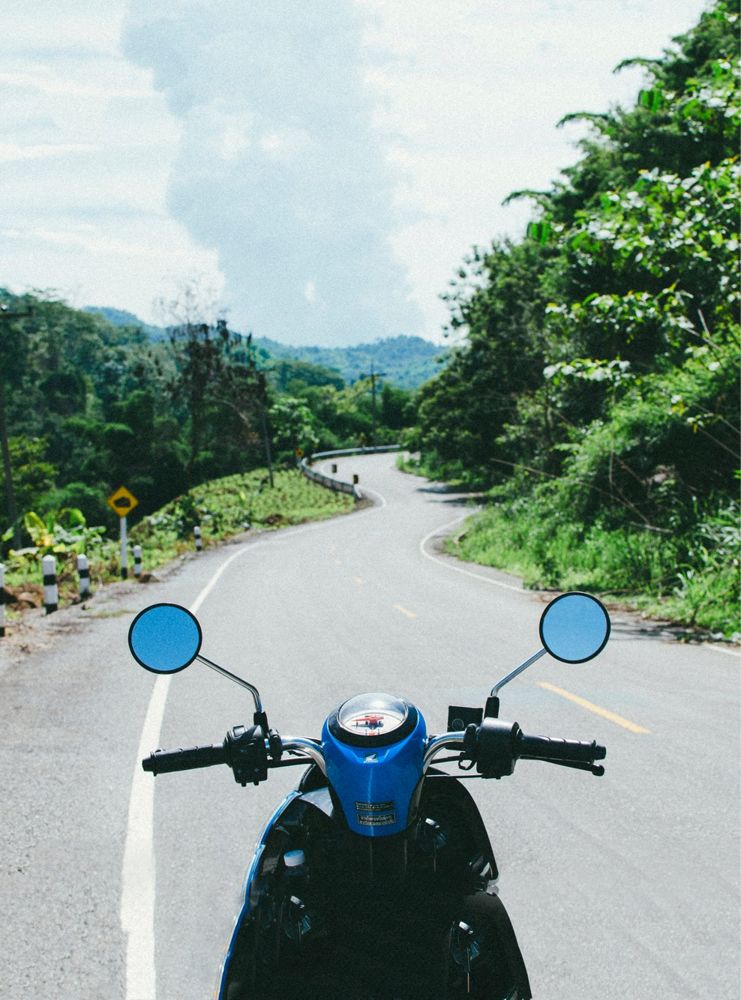
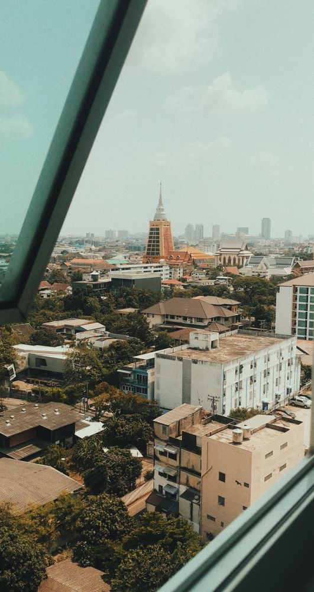
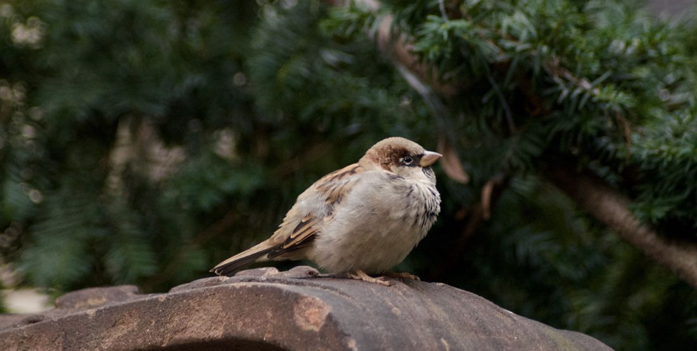
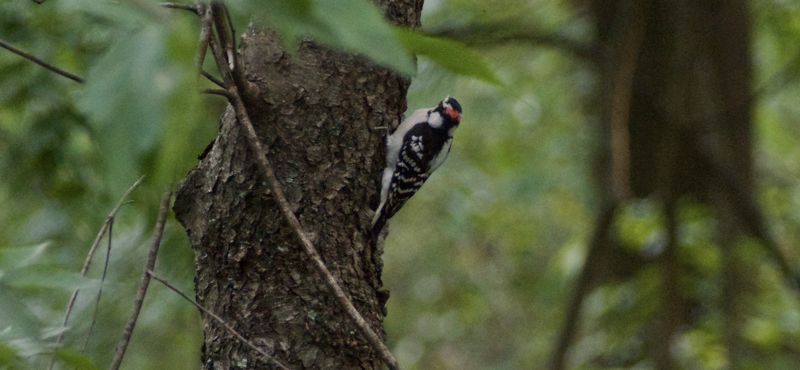

Weather Dashboard
A customizable weather dashboard: pick the readings you want, arrange them, and check any location with live Open-Meteo data.
Product manager in New York City. These are the small tools I’ve built on the side, in the order I started them.
August
A customizable weather dashboard: pick the readings you want, arrange them, and check any location with live Open-Meteo data.
September

Find affordable Amtrak trips out of Penn Station by asking in plain English.

A stage-by-stage plan from Heathrow landing to the curb, built from your flight number and saved for offline use.
October

A field companion for birding Central Park: local species, where to find them, and how to tell look-alikes apart.

November